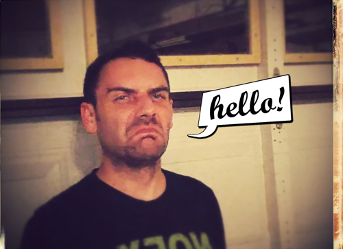

Corey Simpson
About Me
Hello. My name is Corey. I enjoy the beach, beer, and bingo. I like music but I am not very good at dancing. My favorite foods are cheese, tacos, and sour candy.
When it comes to literature and the like, I've Goethe a Nietzsche that I just Kant scratch. I like some movies, but not most...only the good ones. Did I mention I like the beach, beer, and bingo? Good bye.